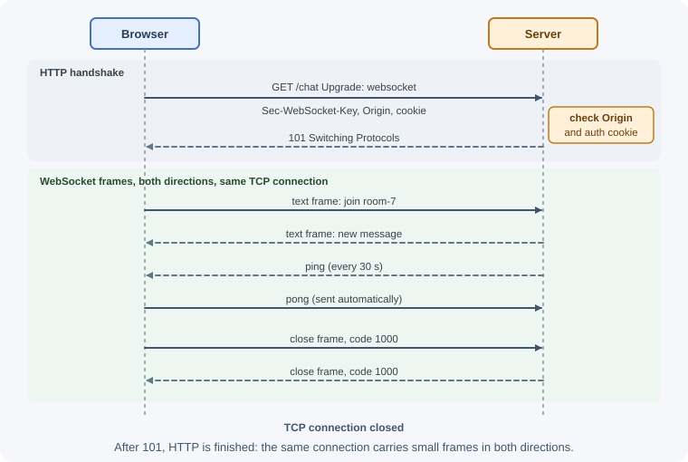
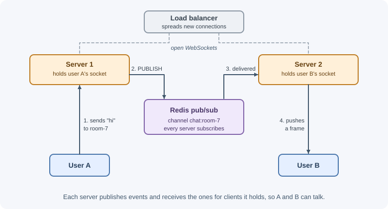
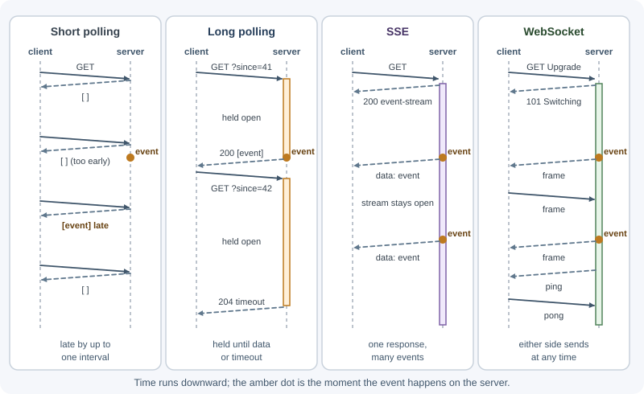

Real-Time Communication: Polling, SSE, and WebSockets¶
Plain HTTP is request-response: the client asks, the server answers, and the server cannot speak first. Real-time features — chat, live notifications, dashboards, collaborative editing, order tracking — need the server to push updates as they happen. There are four main techniques: short polling, long polling, Server-Sent Events (SSE), and WebSockets. Each fits different needs.
Why it matters¶
Choosing the wrong technique is expensive. Polling every second from 50,000 clients creates huge load for mostly empty responses. Using WebSockets for a simple one-way notification feed adds connection management, scaling, and proxy complexity you did not need. Understanding the trade-offs lets you pick the simplest approach that meets the latency and direction requirements, and plan for scaling stateful connections across multiple servers.
Real-world usage¶
- Slack Socket Mode. Slack apps can receive Events API payloads and interactive events over a WebSocket instead of exposing a public HTTP Request URL — useful for apps behind a firewall (Slack: Using Socket Mode).
- Streaming AI responses with SSE. Anthropic's Messages API streams responses incrementally as server-sent events, so text appears as it is generated instead of after the whole answer is ready (Anthropic: streaming messages).
- Mastodon's streaming API offers the same real-time updates either as server-sent events over a long-lived HTTP connection or over a WebSocket, letting each client pick (Mastodon: streaming API).
Popular tools and providers: the ws library and Socket.IO for Node.js,
the browser EventSource API, Redis pub/sub for fan-out across instances,
and hosted services such as Ably, Pusher, and AWS API Gateway WebSocket APIs.
How it works¶
Short polling¶
The client asks for updates on a fixed interval.
Client Server
│── GET /notifications ──►│ nothing new
│◄──────── 200 [] ────────│
│ (wait 5 s) │
│── GET /notifications ──►│ nothing new
│◄──────── 200 [] ────────│
│ (wait 5 s) │
│── GET /notifications ──►│ one new item
│◄──── 200 [{...}] ───────│
- Simple; works everywhere; stateless on the server; easy to cache and scale.
- Latency is up to the interval; most requests return nothing; load grows with clients × frequency.
- Fine for infrequent updates (every 30–60 seconds) or low client counts.
- Use conditional requests (
ETag/If-None-Match→304) or asincecursor to keep responses small.
Long polling¶
The client makes a request; the server holds it open until there is new data or a timeout (for example, 30 seconds), then responds. The client immediately sends the next request.
Client Server
│── GET /updates?since=41 ─►│ hold...
│ │ (event happens at 12 s)
│◄──── 200 [{id: 42}] ──────│
│── GET /updates?since=42 ─►│ hold... (no event for 30 s)
│◄──────── 204 ─────────────│ timeout: empty response
│── GET /updates?since=42 ─►│ hold...
- Near real-time with plain HTTP; works through almost any proxy.
- Each waiting client holds a connection; there is overhead per message (a full request/response); ordering and missed events need a cursor.
- Historically used as a fallback when WebSockets were not available.
Server-Sent Events (SSE)¶
SSE is a standard for one-way server-to-client streaming over a normal
HTTP response that stays open. The server sends a response with
Content-Type: text/event-stream and writes events as text.
Event stream format — fields separated by newlines, events separated by a blank line:
retry: 5000
id: 42
event: order-status
data: {"orderId":"812","status":"shipped"}
id: 43
data: plain message on the default "message" event
: this line is a comment (often used as a keep-alive)
| Field | Meaning |
|---|---|
data: |
The event payload (multiple data: lines join with newlines) |
event: |
Event type; the browser dispatches it to listeners for that name |
id: |
Event ID; the browser remembers the last one |
retry: |
Reconnection delay in milliseconds |
: |
Comment, ignored by the client |
Browser side, the EventSource API:
const source = new EventSource("/api/orders/812/events");
source.addEventListener("order-status", (event) => {
const update = JSON.parse(event.data);
console.log(update.status);
});
source.onerror = () => {
// The browser reconnects automatically
};
Key properties:
- Automatic reconnection: if the connection drops, the browser reconnects
and sends a
Last-Event-IDheader with the last ID it saw, so the server can resend missed events. - One direction only: the client sends data through normal HTTP requests.
- Text only (send JSON as text); works with normal HTTP infrastructure, cookies, and authentication.
- Over HTTP/1.1, browsers limit connections per domain (about six), and each
open
EventSourceuses one — which matters with many tabs. HTTP/2 multiplexing removes most of this limit. EventSourcecannot set custom headers such asAuthorization; use cookies or a fetch-based SSE client if you need headers.
WebSockets¶
A WebSocket is a persistent, full-duplex connection: both client and server can send messages at any time over one TCP connection. It starts as an HTTP request that asks to upgrade the protocol:
GET /chat HTTP/1.1
Host: example.com
Upgrade: websocket
Connection: Upgrade
Sec-WebSocket-Key: dGhlIHNhbXBsZSBub25jZQ==
Sec-WebSocket-Version: 13
Origin: https://example.com
HTTP/1.1 101 Switching Protocols
Upgrade: websocket
Connection: Upgrade
Sec-WebSocket-Accept: s3pPLMBiTxaQ9kYGzzhZRbK+xOo=
(now both sides exchange WebSocket frames: text, binary, ping, pong, close)

- Low overhead per message after the handshake; true bidirectional, low-latency messaging.
- Supports text and binary data.
- Stateful: each server holds open connections, which affects scaling, deploys, and load balancing.
- No built-in reconnection, message acknowledgments, rooms, or replay — you build them or use a library.
- Use
wss://(WebSocket over TLS) in production.
Protocol-level details — framing, the accept-key calculation, close codes — are covered in WebSockets.
The ws library and Socket.IO¶
ws: a fast, minimal WebSocket implementation for Node.js. You get raw WebSocket connections and handle message formats, heartbeats, and reconnection yourself.- Socket.IO: a higher-level library with its own protocol on top of WebSocket (with HTTP long-polling fallback). It adds automatic reconnection, acknowledgments (callbacks when a message is received), rooms and namespaces for broadcasting to groups, and adapters for scaling. A Socket.IO client cannot talk to a plain WebSocket server, and vice versa.
Authentication for WebSockets¶
The browser WebSocket API cannot set custom headers like Authorization
on the handshake. Common approaches:
- Cookies: if the WebSocket endpoint is on the same site, the session
cookie is sent with the upgrade request. Validate it during the handshake,
and check the
Originheader, because cross-site pages can also open WebSockets to your server with the user's cookies (cross-site WebSocket hijacking). - Short-lived ticket: the client calls an authenticated HTTP endpoint to get a one-time token, then connects with it (for example, in the first message, or briefly in the query string — query strings may appear in logs, so keep the token single-use and short-lived).
- First message auth: accept the connection, require an authentication message within a few seconds, and close it otherwise.
Authorize every message or subscription, not just the connection: a user allowed to connect is not necessarily allowed to join every room. Also handle tokens or sessions that expire while a connection stays open.
Heartbeats¶
Idle connections can be silently dropped by proxies, load balancers, NAT devices, or mobile networks, and a server may not notice a vanished client for a long time. Heartbeats detect this:
- The server sends a WebSocket ping frame periodically; the client replies with a pong automatically. If no pong arrives before the next check, terminate the connection.
- For SSE, send a comment line (
: ping) every 15–30 seconds to keep proxies from closing idle streams. - Set proxy timeouts (for example, Nginx
proxy_read_timeout) longer than the heartbeat interval.
Scaling real-time connections¶
With several server instances behind a load balancer, two problems appear:
- Connection affinity: Socket.IO's long-polling fallback sends several HTTP requests that must reach the same server, requiring sticky sessions. Pure WebSocket and SSE connections are single long-lived connections, so affinity matters less, but reconnects may land elsewhere.
- Cross-instance delivery: user A is connected to server 1, user B to server 2. A message for B must reach server 2. The standard solution is a pub/sub backbone: every instance publishes events to Redis (or another broker) and subscribes to receive events for its connected clients.

Socket.IO provides a Redis adapter for this. Also plan for:
- Load balancer support for upgrades and long-lived connections (see load balancing).
- Deploys: restarting a server drops its connections; clients must reconnect with backoff and jitter so they do not all reconnect at once.
- Connection limits: file descriptors and memory per connection.
Comparison¶

| Short polling | Long polling | SSE | WebSockets | |
|---|---|---|---|---|
| Direction | Client pulls | Client pulls (server delays reply) | Server → client | Both ways |
| Latency | Up to the interval | Low | Low | Lowest |
| Protocol | Plain HTTP | Plain HTTP | HTTP (text/event-stream) |
Upgrade to WebSocket |
| Reconnection | N/A | Client loops | Built into EventSource |
You implement it (or library) |
| Binary data | Yes (HTTP) | Yes | No (text) | Yes |
| Server state | Stateless | Held requests | Open connections | Open connections |
| Infrastructure | Anything | Anything | Most HTTP infra; disable proxy buffering | Needs upgrade support |
| Good for | Rare updates, simple needs | Fallback, moderate needs | Notifications, feeds, progress, AI token streaming | Chat, games, collaboration, live trading |
How to choose¶
- Updates are infrequent and seconds of delay are fine → short polling.
- The server pushes, the client rarely sends → SSE.
- Both sides send frequently with low latency → WebSockets (or Socket.IO if you want rooms, acknowledgments, and reconnection built in).
- Very restrictive networks with no streaming support → long polling.
When to use and when not to use¶
Use real-time push when:
- Users act on updates within seconds: chat, live dashboards, order tracking, collaborative editing, streaming AI output.
- Polling would mean many requests that mostly return nothing.
Do not use it when:
- Data changes rarely (every few minutes or less) — short polling or a refresh button is simpler and cheaper.
- The update can wait for the next page load or an email.
- You have no plan for scaling connections, reconnecting, and resuming after missed events.
| Need | Choose | Not |
|---|---|---|
| Hourly weather widget | Short polling | WebSockets |
| Deployment or export progress bar | SSE | WebSockets |
| Notification feed | SSE | Polling every second |
| Chat, multiplayer game, live cursors | WebSockets (or Socket.IO) | SSE plus many POSTs |
| Proxies that break streaming | Long polling | SSE |
| Streaming AI tokens to a browser | SSE | Long polling |
Practical examples¶
SSE endpoint in Express¶
import { EventEmitter } from "node:events";
const orderEvents = new EventEmitter(); // in production: Redis pub/sub
app.get("/api/orders/:id/events", authenticate, (request, response) => {
response.set({
"Content-Type": "text/event-stream",
"Cache-Control": "no-cache",
Connection: "keep-alive",
"X-Accel-Buffering": "no", // ask Nginx not to buffer the stream
});
response.flushHeaders();
// Resend anything missed since the client's last event (if you store them)
const lastEventId = request.get("last-event-id");
// ...look up and write events after lastEventId...
const send = (event) => {
response.write(`id: ${event.id}\n`);
response.write("event: order-status\n");
response.write(`data: ${JSON.stringify(event.data)}\n\n`);
};
const listener = (event) => {
if (event.data.orderId === request.params.id) send(event);
};
orderEvents.on("update", listener);
// Keep-alive comment so proxies do not close an idle connection
const heartbeat = setInterval(() => response.write(": ping\n\n"), 20000);
// Clean up when the client disconnects
request.on("close", () => {
clearInterval(heartbeat);
orderEvents.off("update", listener);
});
});
WebSocket server with ws, origin check, and heartbeats¶
import { createServer } from "node:http";
import { WebSocketServer } from "ws";
const server = createServer(app); // share the port with Express
const wss = new WebSocketServer({ noServer: true });
server.on("upgrade", async (request, socket, head) => {
// Reject cross-site connections and unauthenticated users
if (request.headers.origin !== "https://app.example.com") {
socket.write("HTTP/1.1 403 Forbidden\r\n\r\n");
return socket.destroy();
}
const user = await userFromSessionCookie(request.headers.cookie);
if (!user) {
socket.write("HTTP/1.1 401 Unauthorized\r\n\r\n");
return socket.destroy();
}
wss.handleUpgrade(request, socket, head, (ws) => {
wss.emit("connection", ws, request, user);
});
});
wss.on("connection", (ws, request, user) => {
ws.isAlive = true;
ws.on("pong", () => { ws.isAlive = true; });
ws.on("message", (raw) => {
let message;
try {
message = JSON.parse(raw.toString());
} catch {
return ws.close(1008, "Invalid message"); // 1008 = policy violation
}
// Validate and authorize each message before acting on it
handleMessage(user, message, ws);
});
});
// Heartbeat: terminate connections that did not answer the last ping
const interval = setInterval(() => {
for (const ws of wss.clients) {
if (!ws.isAlive) {
ws.terminate();
continue;
}
ws.isAlive = false;
ws.ping();
}
}, 30000);
wss.on("close", () => clearInterval(interval));
server.listen(3000);
Socket.IO with rooms and the Redis adapter (sketch)¶
import { Server } from "socket.io";
import { createAdapter } from "@socket.io/redis-adapter";
import { createClient } from "redis";
const pubClient = createClient({ url: process.env.REDIS_URL });
const subClient = pubClient.duplicate();
await Promise.all([pubClient.connect(), subClient.connect()]);
const io = new Server(server, { cors: { origin: "https://app.example.com" } });
io.adapter(createAdapter(pubClient, subClient)); // broadcast across instances
io.on("connection", (socket) => {
socket.on("join-room", (roomId, ack) => {
// Authorize before joining
socket.join(roomId);
ack({ ok: true });
});
socket.on("chat-message", ({ roomId, text }) => {
io.to(roomId).emit("chat-message", { text, from: socket.id });
});
});
Best practices¶
- Choose the simplest technique that meets direction and latency needs.
- Authenticate during the handshake, check
Origin, and authorize every message or subscription. - Use heartbeats; tune proxy timeouts to exceed them.
- Make clients reconnect with exponential backoff and jitter; resume from a
cursor or
Last-Event-ID. - Use a pub/sub backbone (such as Redis) when running multiple instances.
- Validate and size-limit every incoming message.
- Disable response buffering for SSE at proxies.
- Use
wss://and HTTPS in production. - Clean up listeners and timers when connections close to avoid leaks.
In production¶
- SSE events arrive in bursts or only at the end. Symptom: progress
jumps from 0% to 100%. Detect: events reach the client together, much
later than the server wrote them. Cause: a proxy (often Nginx) buffers the
response, or compression middleware holds data back. Fix: send
X-Accel-Buffering: noor turn offproxy_bufferingfor that location, and excludetext/event-streamfrom compression. - Connections drop every 60 seconds. Symptom: clients reconnect once a
minute while idle. Detect: close events at a regular interval in server
logs. Cause: a proxy or load balancer idle timeout (Nginx's
proxy_read_timeoutdefaults to 60 seconds) is shorter than the time between messages. Fix: send heartbeats more often than the timeout, and raise the proxy timeout for streaming routes. - Memory grows until the process restarts. Symptom: heap usage climbs
with the number of connections ever opened. Detect: heap snapshots show
retained listeners or sockets;
MaxListenersExceededWarningin logs. Cause: listeners and timers are not removed when clients disconnect, or dead connections are never detected. Fix: clean up onclose, and terminate connections that miss a heartbeat. - Messages reach only some users. Symptom: a chat message is seen by users on one server but not another. Detect: the recipients that missed it are connected to a different instance. Cause: broadcasting only to local connections. Fix: add a pub/sub backbone such as the Socket.IO Redis adapter or Redis channels.
- A deploy causes a thundering herd. Symptom: CPU and authentication load spike right after each release. Detect: thousands of reconnects in the same second. Cause: every client reconnects immediately when its server restarts. Fix: reconnect with exponential backoff and jitter, and drain connections gradually during deploys.
Important terminology¶
- Short polling: repeated requests on a fixed interval.
- Long polling: a request held open until data is available or a timeout.
- Server-Sent Events (SSE): one-way event streaming over HTTP using
text/event-stream. EventSource: the browser API for consuming SSE.Last-Event-ID: header sent on SSE reconnection with the last event ID received.- WebSocket: a full-duplex protocol established through an HTTP upgrade.
101 Switching Protocols: the response that completes a WebSocket upgrade.- Frame: a unit of WebSocket data (text, binary, ping, pong, close).
- Heartbeat: periodic ping/pong or keep-alive messages to detect dead connections.
- Sticky session: routing a client's requests to the same server.
- Pub/sub: a messaging pattern where publishers send to channels and subscribers receive from them.
- Room: a Socket.IO grouping for broadcasting to a subset of clients.
Common mistakes and misconceptions¶
- Using WebSockets for one-way notifications where SSE would be simpler.
- Polling too frequently, multiplying load for empty responses.
- No
Origincheck on WebSocket handshakes, enabling cross-site WebSocket hijacking with cookies. - Authenticating only at connect time and never authorizing messages or rechecking expired sessions.
- No heartbeats, leaving dead connections and leaking memory.
- Broadcasting only within one instance in a multi-instance deployment.
- Assuming Socket.IO is plain WebSocket. Its clients and servers only talk to each other.
- Forgetting proxy buffering and timeouts, which break SSE streams.
Revision questions¶
- Compare short polling and long polling in latency and server load.
- Describe the SSE event format and how
Last-Event-IDhelps after a reconnect. - Walk through the WebSocket upgrade handshake. Which status code completes it?
- Why can't browsers send an
Authorizationheader with a WebSocket, and what alternatives exist? - How do you deliver a message to a user connected to a different server instance?
- Which technique would you choose for a chat app, a deployment progress bar, and a weather widget updated hourly? Why?